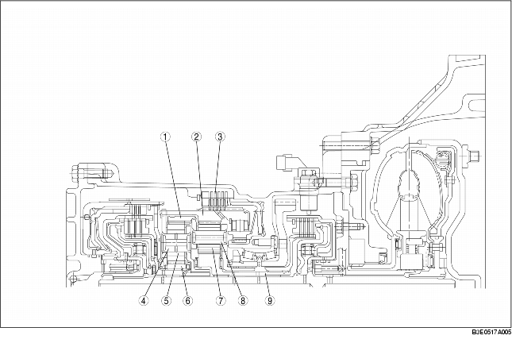

Planetary gear structure
• The front planetary gear is integrated with the one-way clutch outer race and engaged with the drive plate of the low and reverse brake.
Because of this, when the front planetary gear rotates, the one-way clutch outer race and the drive plate of the low and reverse brake also rotate together.
• The front sun gear is installed inside of the front pinion gears, and the front internal gear is installed outside of the front pinion gears. The front sun gear is engaged with the forward clutch hub, and the front internal gear is engaged with the rear planetary carrier.
• The rear planetary gear and the rear pinion gear have the rear sun gear installed inside and the rear internal gear outside. The rear sun gear is engaged with the turbine shaft via the 2-4 brake drum, and the rear internal gear is engaged with the primary gear via the front planetary carrier.

.